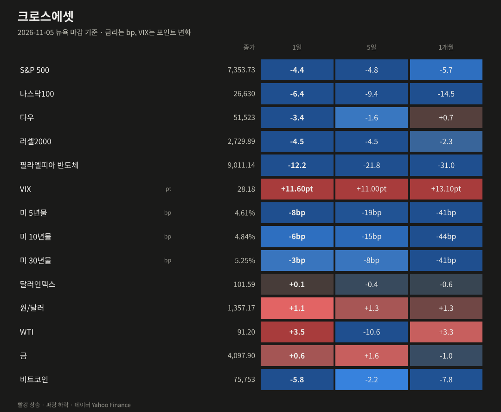
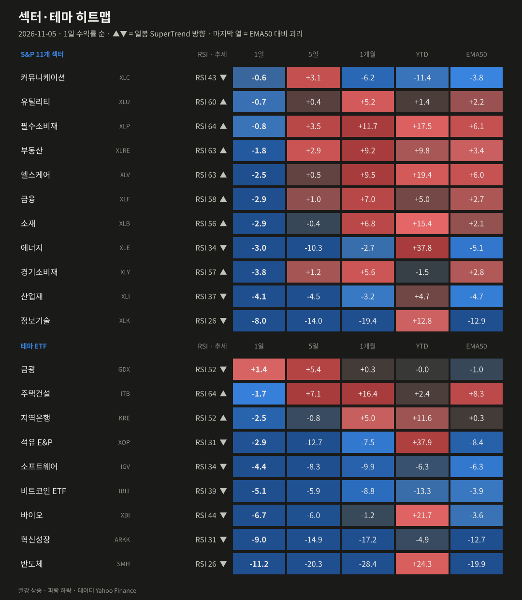
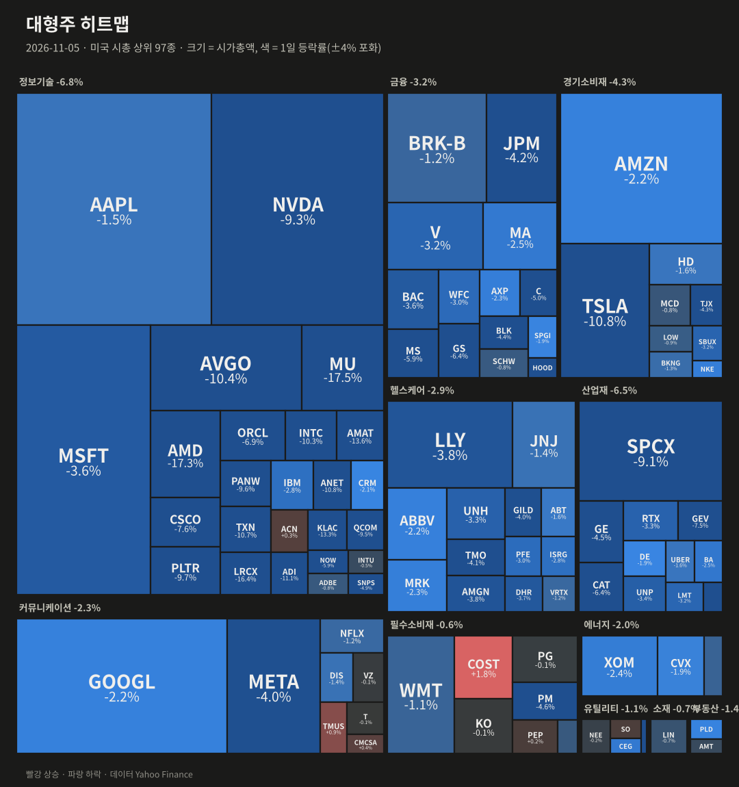
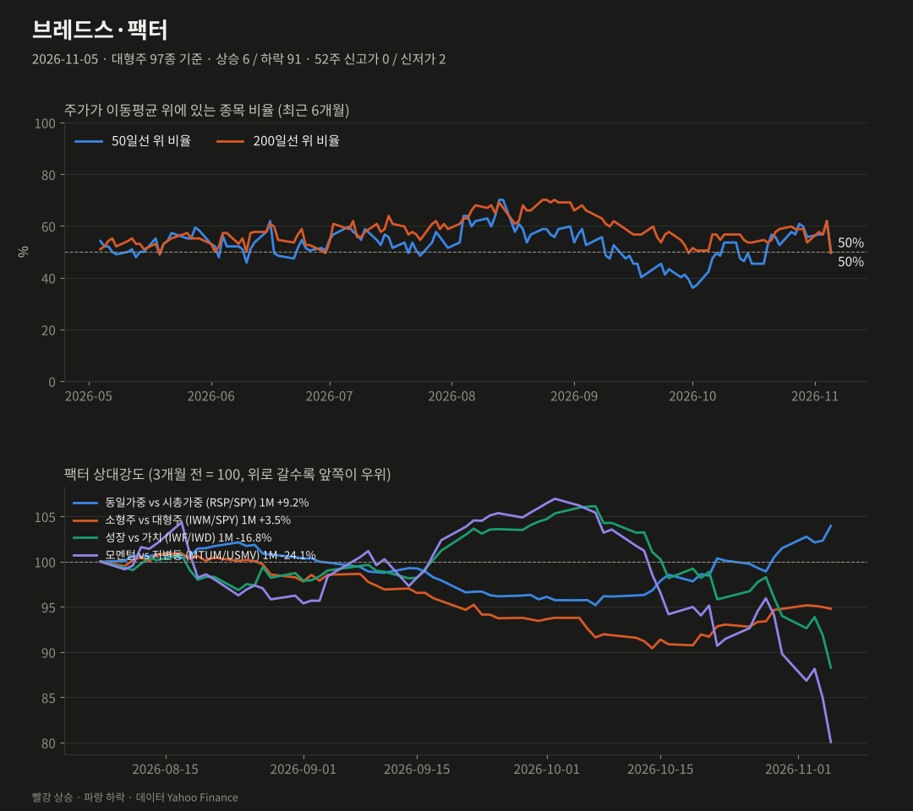
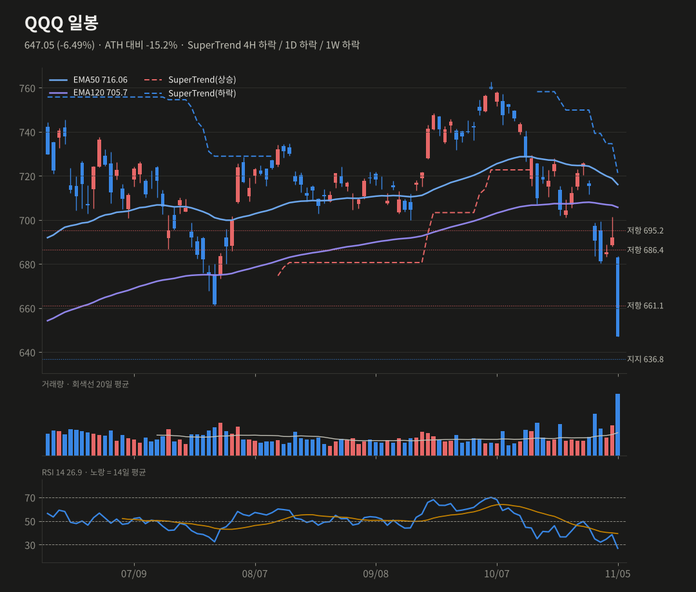
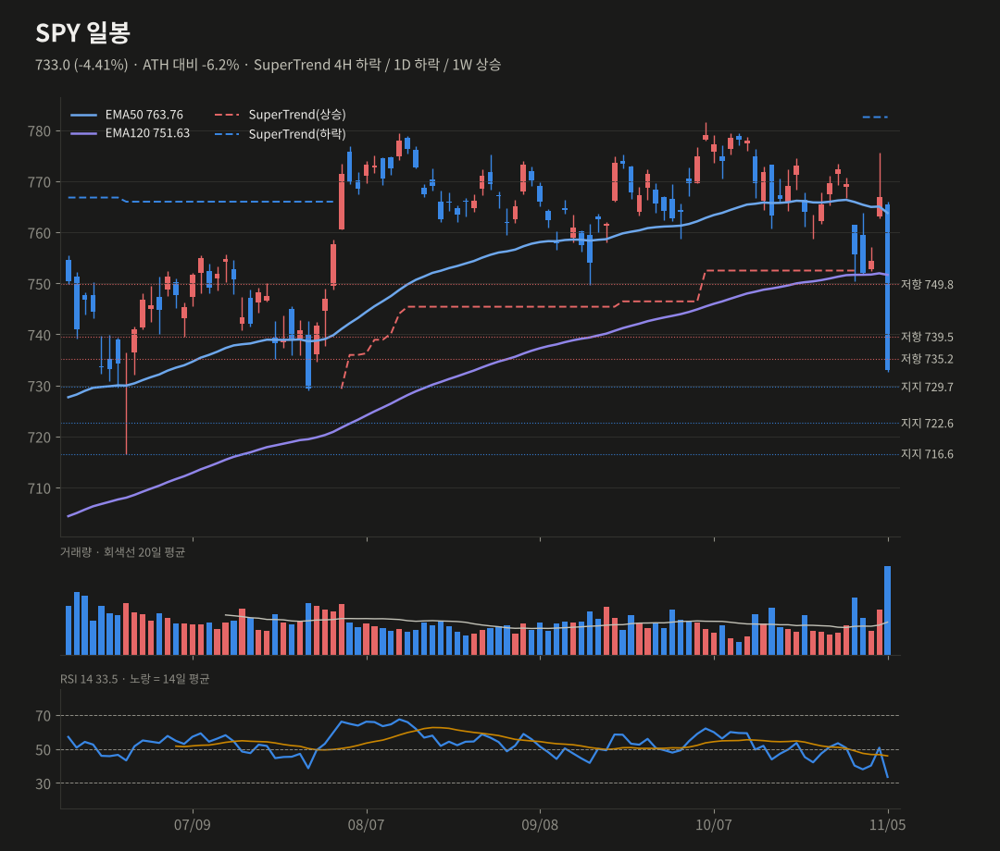
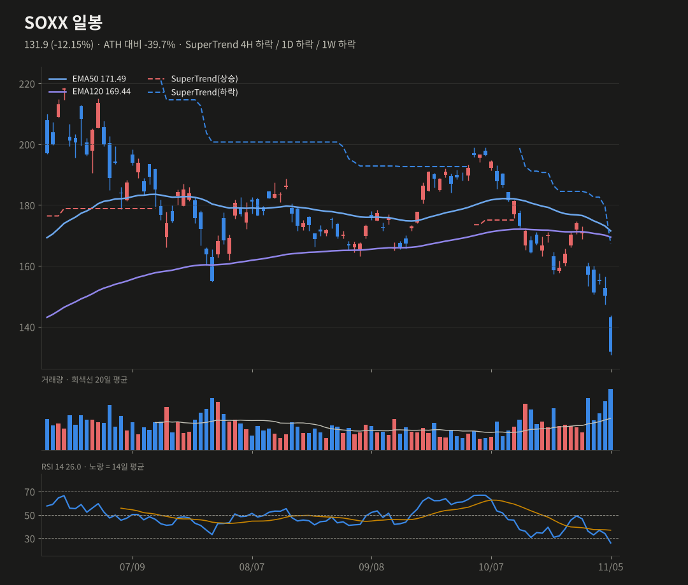
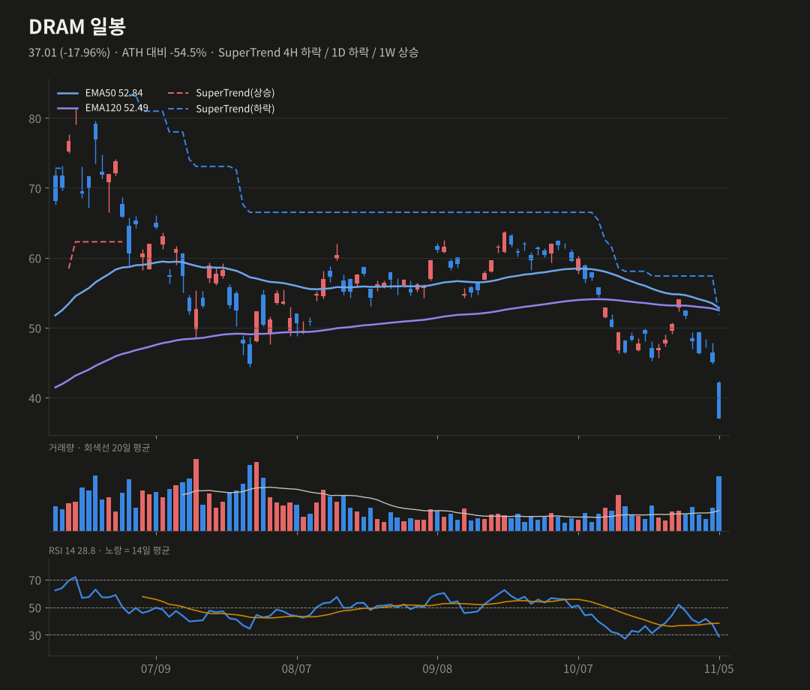

미증시 마감 브리핑
11/5(목) 뉴욕 마감 기준 · 생성 2026-11-06 07:41 KST
AI 데이터센터 투자 둔화 공포로 반도체가 투매됐어요(SOX −12.3%). 나스닥100 −6.4%, S&P −4.4%로 2025년 4월 이후 최악의 하루였어요.
S&P 5007,353.73-4.36%
나스닥10026,630-6.36%
다우51,523-3.44%
러셀20002,729.89-4.45%
반도체(SOX)9,011.14-12.25%
VIX28.18+11.60pt
미 10년물4.84%-5.70bp
원/달러1,357.17+1.06%
요약
- 데이터센터 투자 둔화 우려로 SOX −12.3%, 나스닥100 −6.4%였어요. 오른 종목은 6/97에 그쳤어요.
- MU·AMD −17%, NVDA −9%로 엔비디아는 연초 대비 마이너스가 됐어요. VIX는 28이에요.
- QQQ 주봉 추세 하락 전환, SPY 일봉 EMA120 이탈로 스윙 확률을 낮췄어요(25~35%).
- 오늘 밤 고용보고서가 있어요. 반도체는 극단적 과매도(RSI 22~26)라 반등 여부를 봐야 해요.
종합 판단
선거 다음 날의 안도 랠리가 하루 만에 'AI 인프라 투자 둔화' 공포로 뒤집혔어요. 반도체·메모리는 한 달 새 고점 대비 40% 안팎 빠져 극단적 과매도예요. 하지만 QQQ 주봉과 SPY 일봉 EMA120이 깨지는 레짐 변화가 나와 스윙 확률은 크게 낮췄어요. 단기에는 기술적 반등 가능성이 있지만, 오늘 밤 고용보고서와 정책 뉴스가 반등의 질을 가를 거예요.
선거 다음 날의 안도 랠리가 하루 만에 'AI 인프라 투자 둔화' 공포로 뒤집혔어요. 반도체·메모리는 한 달 새 고점 대비 40% 안팎 빠져 극단적 과매도예요. 하지만 QQQ 주봉과 SPY 일봉 EMA120이 깨지는 레짐 변화가 나와 스윙 확률은 크게 낮췄어요. 단기에는 기술적 반등 가능성이 있지만, 오늘 밤 고용보고서와 정책 뉴스가 반등의 질을 가를 거예요.
무엇이 시장을 움직였나
- 촉매: 민주당이 이긴 주요 주에서 데이터센터 반대 여론이 커졌다는 로이터 보도가 나왔어요. UBS는 2028년 예정된 데이터센터 증설의 약 30%가 위험하다고 분석했어요. 전날 다우 +3%를 거의 다 반납했어요.
- 반도체 붕괴: MU −17.5%, AMD −17.3%, LRCX −16.4%, AMAT −13.6%, KLAC −13.4%, NVDA −9.3%였어요. 엔비디아는 올해 상승분을 모두 잃었어요. 거래량은 평균의 2~3배였어요.
- 변동성·위험자산: VIX 28.2(+11.6pt)로 3월 이후 최고예요. 비트코인 −5.8%(7.6만 달러), 혁신성장(ARKK) −9.0%, 바이오 −6.7%였어요.
- 방어: 10년물이 5.7bp 내려 4.84%가 됐고, 12월 인상 확률은 82.7%에서 70.1%로 낮아졌어요(CME FedWatch). COST(+1.8%)와 TMUS만 올랐어요.
- 데이터 보정: SOXX는 11/5 3:1 액면분할, MTUM은 4:1 분할이 원자료에 반영되지 않아 과거 가격을 분할 기준으로 보정했어요. SOXX 실제 하락은 −12.2%예요.
장 마감 후·시간외
- 시간외는 소폭 추가 약세예요. QQQ 645.0(−0.3%), SPY 730.9(−0.3%), SOXX 131.1(−0.6%), DRAM 37.6(+1.6%)이에요. 장 마감 후 IREN은 AI 클라우드 매출이 3배 가까이 늘었어요.

| 자산 | 종가 | 1일 | 5일 | 1개월 |
|---|---|---|---|---|
| S&P 500 | 7353.73 | -4.36% | -4.75% | -5.74% |
| 나스닥100 | 26629.81 | -6.36% | -9.43% | -14.54% |
| 다우 | 51523.06 | -3.44% | -1.57% | +0.67% |
| 러셀2000 | 2729.89 | -4.45% | -4.52% | -2.27% |
| 필라델피아 반도체 | 9011.14 | -12.25% | -21.77% | -31.03% |
| VIX | 28.18 | +11.60pt | +11.00pt | +13.10pt |
| 미 5년물 | 4.608 | -8.1bp | -19.3bp | -41.3bp |
| 미 10년물 | 4.837 | -5.7bp | -15.2bp | -44.0bp |
| 미 30년물 | 5.251 | -3.1bp | -7.8bp | -41.0bp |
| 달러인덱스 | 101.59 | +0.08% | -0.44% | -0.64% |
| 원/달러 | 1357.17 | +1.06% | +1.26% | +1.30% |
| WTI | 91.2 | +3.50% | -10.59% | +3.31% |
| 금 | 4097.9 | +0.61% | +1.65% | -1.03% |
| 비트코인 | 75752.8 | -5.79% | -2.17% | -7.78% |

| 섹터·테마 | 1일 | 5일 | 1개월 | YTD | RSI | 일봉 추세 |
|---|---|---|---|---|---|---|
| 금광 GDX | +1.37% | +5.43% | +0.34% | -0.0% | 52 | 하락 |
| 커뮤니케이션 XLC | -0.59% | +3.09% | -6.22% | -11.4% | 43 | 하락 |
| 유틸리티 XLU | -0.71% | +0.37% | +5.22% | +1.4% | 60 | 상승 |
| 필수소비재 XLP | -0.75% | +3.48% | +11.69% | +17.5% | 64 | 상승 |
| 주택건설 ITB | -1.67% | +7.09% | +16.45% | +2.4% | 64 | 상승 |
| 부동산 XLRE | -1.82% | +2.88% | +9.19% | +9.8% | 63 | 상승 |
| 지역은행 KRE | -2.46% | -0.75% | +4.96% | +11.6% | 52 | 상승 |
| 헬스케어 XLV | -2.50% | +0.47% | +9.54% | +19.4% | 63 | 상승 |
| 금융 XLF | -2.87% | +0.98% | +6.98% | +5.0% | 58 | 상승 |
| 석유 E&P XOP | -2.89% | -12.74% | -7.51% | +37.9% | 31 | 하락 |
| 소재 XLB | -2.91% | -0.38% | +6.84% | +15.4% | 56 | 상승 |
| 에너지 XLE | -2.98% | -10.30% | -2.73% | +37.8% | 34 | 하락 |
| 경기소비재 XLY | -3.83% | +1.24% | +5.64% | -1.5% | 57 | 상승 |
| 산업재 XLI | -4.12% | -4.50% | -3.20% | +4.7% | 37 | 하락 |
| 소프트웨어 IGV | -4.39% | -8.30% | -9.86% | -6.3% | 34 | 하락 |
| 비트코인 ETF IBIT | -5.07% | -5.86% | -8.85% | -13.3% | 39 | 하락 |
| 바이오 XBI | -6.73% | -5.95% | -1.22% | +21.7% | 44 | 하락 |
| 정보기술 XLK | -8.00% | -13.97% | -19.37% | +12.8% | 26 | 하락 |
| 혁신성장 ARKK | -8.98% | -14.91% | -17.16% | -4.9% | 31 | 하락 |
| 반도체 SMH | -11.21% | -20.29% | -28.37% | +24.3% | 26 | 하락 |

| 상승 상위 | 1일 | 거래량(20일 대비) | 하락 상위 | 1일 | 거래량 |
|---|---|---|---|---|---|
| COST | +1.83% | x2.01 | MU | -17.46% | x2.83 |
| TMUS | +0.89% | x1.01 | AMD | -17.26% | x2.97 |
| CMCSA | +0.40% | x1.06 | LRCX | -16.36% | x2.7 |
| ACN | +0.34% | x1.21 | AMAT | -13.58% | x2.23 |
| SO | +0.24% | x2.52 | KLAC | -13.35% | x2.71 |
| PEP | +0.20% | x1.26 | ADI | -11.13% | x3.19 |

대형주 97종: 상승 6 / 하락 91 · 50일선 위 50.5% (전일 61.9%, 5일 전 59.8%) · 200일선 위 49.5% · 52주 신고가 0 / 신저가 2
오른 종목은 6개뿐이고 내린 종목은 91개였어요. SMA50 위 종목 비율은 61.9%에서 50.5%로 급락했어요. 동일가중(RSP −2.9%)이 시총가중보다 1.6%p 덜 빠져, AI 대형주에 집중된 투매였어요.
| 팩터 스프레드 | 1일 | 5일 | 1개월 |
|---|---|---|---|
| 동일가중 vs 시총가중 (RSP/SPY) | +1.59% | +3.45% | +9.19% |
| 소형주 vs 대형주 (IWM/SPY) | -0.19% | +0.14% | +3.47% |
| 성장 vs 가치 (IWF/IWD) | -3.89% | -8.04% | -16.81% |
| 모멘텀 vs 저변동 (MTUM/USMV) | -5.75% | -14.93% | -24.06% |
기술적 분석 · 확률
TradingView 설정과 맞춘 지표(EMA50·EMA120, SuperTrend ATR20×4, RSI14, MACD 12/26/9). 확률은 차트 기반 추정치예요.
QQQ 647.05 -6.49%
SuperTrend 4H 하락 / 1D 하락 / 1W 하락 · RSI 26.86
단기 반등 50% (-5) · 스윙 상승 25% (-10)
주봉 SuperTrend가 하락(757.5)으로 전환하고 주봉 EMA50(671.0)도 깨지는 레짐 변화가 나왔어요. 대신 일봉 RSI 26.9, 4H 24.3으로 극단적 과매도라 기술적 반등 여지는 커요. 거래량은 평균의 2.9배예요.
상방 661.1 회복 → 671.0(주봉 EMA50), 686.4
하방 636.8 이탈 → 629.2, 583.3
SuperTrend 4H 하락 / 1D 하락 / 1W 하락 · RSI 26.86
단기 반등 50% (-5) · 스윙 상승 25% (-10)
주봉 SuperTrend가 하락(757.5)으로 전환하고 주봉 EMA50(671.0)도 깨지는 레짐 변화가 나왔어요. 대신 일봉 RSI 26.9, 4H 24.3으로 극단적 과매도라 기술적 반등 여지는 커요. 거래량은 평균의 2.9배예요.
상방 661.1 회복 → 671.0(주봉 EMA50), 686.4
하방 636.8 이탈 → 629.2, 583.3
SPY 733.0 -4.41%
SuperTrend 4H 하락 / 1D 하락 / 1W 상승 · RSI 33.5
단기 반등 45% (-15) · 스윙 상승 35% (-10)
하루 만에 일봉 EMA50과 EMA120(751.6)을 모두 이탈했어요(레짐 변화). 일봉 RSI 33.5예요. 주봉 SuperTrend(705.4)는 아직 상승이고, 주봉 EMA50 722.97이 다음 방어선이에요.
상방 739.5 회복 → 749.8, 751.6(EMA120)
하방 729.7 이탈 → 722.6(주봉 EMA50), 716.6
SuperTrend 4H 하락 / 1D 하락 / 1W 상승 · RSI 33.5
단기 반등 45% (-15) · 스윙 상승 35% (-10)
하루 만에 일봉 EMA50과 EMA120(751.6)을 모두 이탈했어요(레짐 변화). 일봉 RSI 33.5예요. 주봉 SuperTrend(705.4)는 아직 상승이고, 주봉 EMA50 722.97이 다음 방어선이에요.
상방 739.5 회복 → 749.8, 751.6(EMA120)
하방 729.7 이탈 → 722.6(주봉 EMA50), 716.6
SOXX 131.9 -12.15%
SuperTrend 4H 하락 / 1D 하락 / 1W 하락 · RSI 25.98
단기 반등 45% (+5) · 스윙 상승 25% (-5)
3:1 분할 보정 기준으로 131.9예요. ATH(218.7) 대비 −39.7%예요. 일봉 RSI 26.0, 4H 21.9로 극단적 과매도라 단기 반등 확률은 소폭 올렸어요. 일봉·주봉 추세는 하락이고, 주봉 EMA50 151.5도 크게 이탈했어요.
상방 140 회복 → 151.5(주봉 EMA50)
하방 122.9 이탈 → 지지 공백
SuperTrend 4H 하락 / 1D 하락 / 1W 하락 · RSI 25.98
단기 반등 45% (+5) · 스윙 상승 25% (-5)
3:1 분할 보정 기준으로 131.9예요. ATH(218.7) 대비 −39.7%예요. 일봉 RSI 26.0, 4H 21.9로 극단적 과매도라 단기 반등 확률은 소폭 올렸어요. 일봉·주봉 추세는 하락이고, 주봉 EMA50 151.5도 크게 이탈했어요.
상방 140 회복 → 151.5(주봉 EMA50)
하방 122.9 이탈 → 지지 공백
DRAM 37.01 -17.96%
SuperTrend 4H 하락 / 1D 하락 / 1W 상승 · RSI 28.76
단기 반등 45% (+5) · 스윙 상승 25% (-5)
−18.0%로 주봉 EMA120(38.4)까지 이탈했어요. 상장 후 장기 추세선이 깨진 셈이에요. 일봉 RSI 28.8, 4H 24.3으로 과매도예요. 이력이 짧아 지지 레벨이 부족해요.
상방 38.4 회복 → 44.4, 46.5(주봉 EMA50)
하방 37 이탈 → 주봉 SuperTrend 29.4까지 공백
SuperTrend 4H 하락 / 1D 하락 / 1W 상승 · RSI 28.76
단기 반등 45% (+5) · 스윙 상승 25% (-5)
−18.0%로 주봉 EMA120(38.4)까지 이탈했어요. 상장 후 장기 추세선이 깨진 셈이에요. 일봉 RSI 28.8, 4H 24.3으로 과매도예요. 이력이 짧아 지지 레벨이 부족해요.
상방 38.4 회복 → 44.4, 46.5(주봉 EMA50)
하방 37 이탈 → 주봉 SuperTrend 29.4까지 공백




일정
- 11/6 10월 고용보고서(08:30 ET, 한국 22:30)
- AI 데이터센터 정책 뉴스
- 12/9 FOMC(인상 확률 70%)
출처
- The Stock Market Today Live, November 5, 2026, Closes Sharply Lower on the AI Chip Selloff (StockTitan)
- US Stocks Tumble as Nasdaq Drops Over 4%; Micron Plunges on Fears Slowing AI Data Center Expansion (TradingKey)
- Qualcomm, Micron, Sandisk, and AMD stocks sink, leading chip sector lower (Yahoo Finance)
데이터 Yahoo Finance·Nasdaq. 색은 한국식(빨강 상승·파랑 하락). 투자 판단의 참고 자료예요. 지난 브리핑